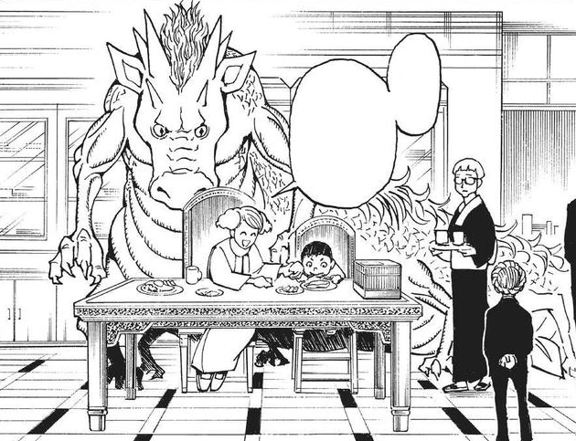
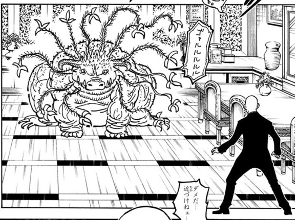

第13王子 マラヤーム
- 登録名
- マラヤーム＝ホイコーロ
- 分類
- 王子
- 初期配置（現在地ではありません）
- 第1層 1013号室
初期配置は台帳の当初の担当先です。後任の人物や復元枠も含み、全員の出航時の在室を示すものではありません。後の展開は下の折りたたみにまとめています。
人物詳細（後の展開を含む）
- 状態
- 存命（念空間に籠城中）
- 所属
- カキン王国
- 母（王妃）
- 第七王妃セヴァンチ
- 最後の所在
最後に登場した場面：第372話（場所は推定：第1層 1013号室）
場所を画像で確認できた記録はまだありません
ほかの関係記録（本人の在室は未確認）
- 第383話 第1層 1013号室・守護霊獣の念空間
- 念使用の確認
- 念使用：未確認（使用不可とは限りません）
- 念系統
- 未確認
- 念能力
- 本人固有の能力は未確認
- 守護霊獣
- 龍型→巨大恐竜型念獣
家族関係
- [親子] 第7王妃 セヴァンチ（母）
守護霊獣：念空間形成型念獣
- 外見・形態
- 初期は空中を泳ぐ龍のような優雅な姿。姉モモゼの死後、急激に変貌して巨大な恐竜型怪物になった。体中にトゲが生えている
- 守護霊獣の念系統
- 未確認
- 念能力
- 念空間を生み出し外界から隔絶する。マラヤームの精神状態（恐怖・ストレス・トラウマ）を反映して姿と力が変化する。念空間内にとどまっているが、維持条件や長期的な安全性は未確認
第372話（原作確認記録あり） ／ 第375話（原作確認記録あり）


編集状況
- 人物ID：P13
- 状態の確認話数：未登録／根拠の出来事：未照合
- 公開データの登録情報から生成したページです。個人メモ・編集内容・調査記録は含めません。
- 一覧の詳細でメモ・編集
情報源：公開人物台帳・公開出来事台帳。